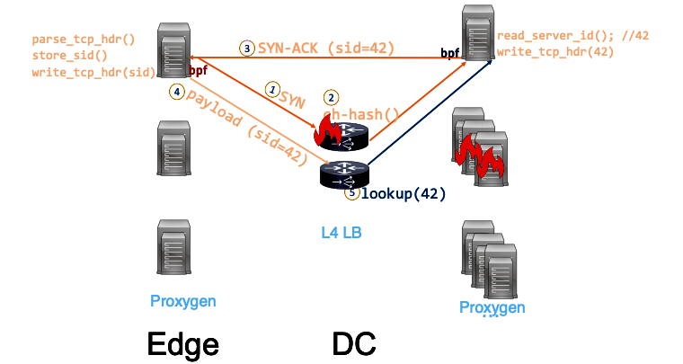
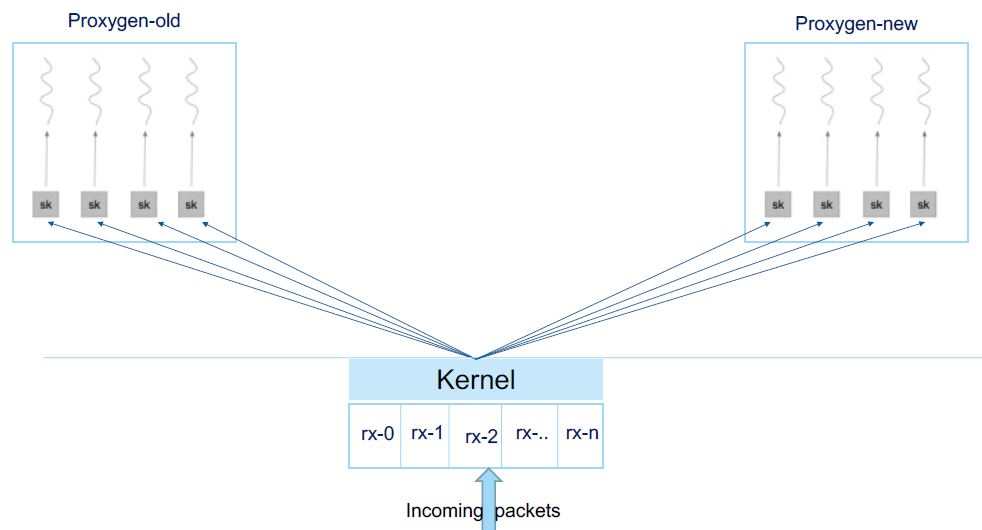
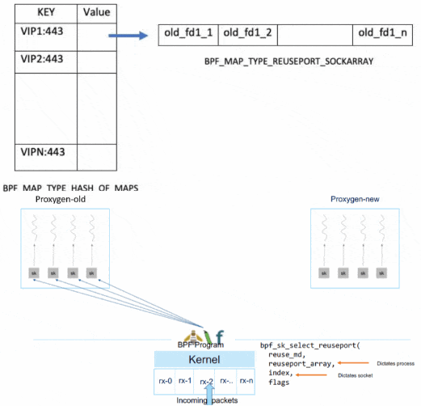

#220321 FB: From XDP to Socket¶
概述¶
原文：https://lpc.events/event/11/contributions/950/
FB 的流量架构包含两层：
边缘节点 负责流量接入。
中心节点 运行应用服务器。
每一层都包含一个 L4 + L7。边缘的 L7 将流量路由到应用服务器所在的中心节点，中心节点的 L7 将流量路由到应用服务器。
整个架构里使用到 XDP 的地方有两个地方：
基于 XDP 实现的 L4 Katran。
L7 UDP 服务的优雅重启 / 发布。
基于 XDP 实现的 L4 Katran¶
项目地址：https://github.com/facebookincubator/katran
转发采用 Maglev 哈希 + 连接跟踪（connection tracking）：
int pick_host(packet* pkt)
if (is_in_local_cache(pkt))
return local_cache[pkt]
return consistent_hash(pkt) % server_ring
如果 L4 的后端服务器挂，连接跟踪会确保已建立的连接调度给正确的后端。
如果 L4 自身服务器挂，导致 ECMP 重新哈希，连接跟踪失效，就依赖于 Maglev 哈希。但是 Maglev 哈希只是将影响尽可能降低，并不是 100%，对于长连接服务、L4/L7 的持续升级发布等场景，都会影响整个服务的可靠性。
QUIC 协议没有这个问题，因为 QUIC 协议包里包含 connection_id 字段，后端服务器可以将 server_id 嵌入 connection_id 中，客户端发的包会将服务端的 connection_id 原样返回（echo back），L4 从 connection_id 中取出 server_id，查表得到 server_id 对应的后端地址，然后转发过去。server_id 由一个单独的服务分配并同步到各个服务组件。
TCP 没有这个机制，但是如果 TCP 连接的客户端在自己的控制之内（比如边缘节点的 L7 -> 中心节点的 L7），可以通过将 server_id 嵌入 TCP options 字段里来实现同样的功能，整个流程如下：
嵌入 server_id 可以通过 sockops bpf 来实现，参考：https://github.com/torvalds/linux/blob/master/tools/testing/selftests/bpf/progs/test_tcp_hdr_options.c
解析 quic 取 server_id 信息：https://github.com/facebookincubator/katran/blob/main/katran/lib/bpf/balancer_kern.c#:~:text=parse_quic
解析 tcp options 取 server_id 信息：https://github.com/facebookincubator/katran/blob/main/katran/lib/bpf/balancer_kern.c#:~:text=tcp_hdr_opt_lookup
L7 UDP 服务的优雅重启 / 发布¶
SO_REUSEPORT 允许多个 socket bind 到同一个 port，对于 UDP 包（有连接的，比如 QUIC），内核在调度包给监听的 socket 时用的是简单的哈希方法，一旦 socket 有变化，比如重启的时候，新的 socket 监听加入，旧的 socket 监听退出，如何保证已经建立的 “连接” 的包发送给旧进程，旧进程优雅退出，新连接的包发送给新启动的进程创建的 socket，就是个问题。
FB 的方案是使用 bpf 实现一个 socket 层面的负载均衡器 bpf_sk_reuseport。这个负载均衡：
使用 BPF_MAP_TYPE_REUSEPORT_SOCKARRAY 类型的 map 记录当前进程所有监听的 udp socket。 负载均衡器按照一定的规则将某一个 QUIC 连接的 UDP 包都调度给同一个 socket 去处理，调度使用 bpf_sk_select_reuseport 函数。使用的规则应该是 连接跟踪（connection tracking） ，也就是每调度一个连接会记录下调度的 socket 信息到一个 map 中（https://www.youtube.com/watch?v=w0K8GkJWCh8&t=1167s 视频这里有提）。
使用 BPF_MAP_TYPE_HASH_OF_MAPS 类型的 map 记录每个 VIP:PORT 当前使用的 sockarray，重启后，当新的进程 ready 后，创建一个新的 sockarray map，使用新 map 的 fd 替换掉老的，对于没有见过的连接，调度到新 sockarray 中，也就是新连接给新进程处理，而已经调度过的连接，继续调度给旧 sockarray 中对应的 socket 去处理，保证已建立连接不中断。
https://github.com/torvalds/linux/commit/5dc4c4b7d4e8115e7cde96a030f98cb3ab2e458c
bpf_sk_select_reuseport 的使用可以参考 ngx_quic_bpf 模块。这个模块实现将 quic 包按 connection id 调度给正确的 worker 进程去的功能，类似 fb bpf_sk_reuseport 负载均衡。
We developed an eBPF program to take advantage of NGINX’s multi‑process architecture. NGINX uses multiple worker processes which enables highly scalable performance across multiple CPU cores. For maximum efficiency, we like to handle each connection with the same worker process. QUIC makes this challenging, as a connection is not tied to the client’s IP address, and the Linux kernel doesn’t provide UDP port-to-process affinity. To solve this we implemented an eBPF extension to integrate with SO_REUSEPORT so that we can map the QUIC connection ID to the worker that first handled it. This is neatly integrated into the NGINX core so that NGINX loads the eBPF bytecode into the kernel’s socket selection code.
—https://www.nginx.com/blog/our-roadmap-quic-http-3-support-nginx/
ngx_quic_bpf 没有使用连接跟踪，而是直接将 socket cookie 写入到 quic 包的 server connection id 的前八个字节中，然后模块对于 quic 包只需要取出 server connection id 的前八个字节，拿着 cookie 去 sockarray map 中找到对应的 socket，调用 bpf_sk_select_reuseport 函数调度过去就行。sockarray map 是在 quic 模块初始化的时候创建的，key 是 socket cookie，value 是 socket，socket cookie 可以通过 getsockopt(fd, SOL_SOCKET, SO_COOKIE, &cookie, &optlen) 获取都到。